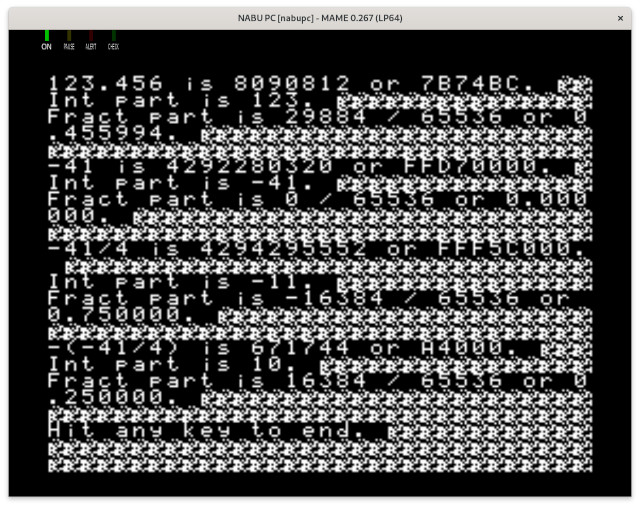
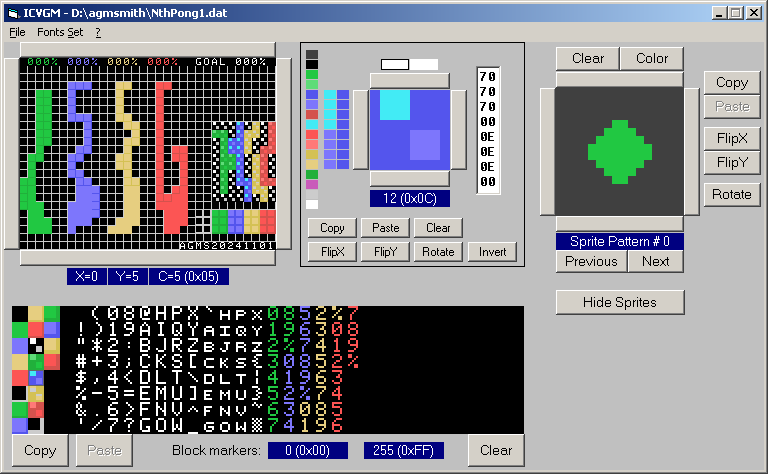
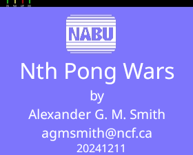
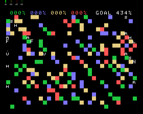
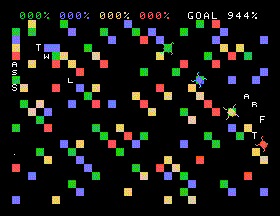
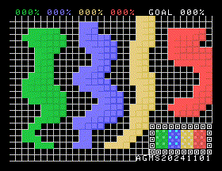
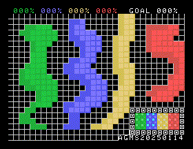

![[Screen shot of Pong Wars, Koen van Gilst version]](Pong_Wars_Koen_van_Gilst_version_20240207.png)
I'm trying to write an improved version of Pong Wars for the NABU as a project to become familiar with NABU programming. Then maybe I can do a fancy Miniputt golf game.
Pong Wars is a game with a board of width by height squares and two balls of different colours (black and white usually). Conveniently, the NABU video display is 32 "characters" wide by 24 rows tall, and if we use a square rather than a letter in the font, that can be our board. It's also easily controlled in that mode (rather than fiddling with pixels and VDP bandwidth limits) and we can do the balls as sprites.
The balls move, controlled by inertia until they hit a square of a colour that doesn't match the ball's colour. In that case, the square changes to the ball's colour and the ball's trajectory reflects (bounces) off the square. The balls also bounce off the walls as you would expect.
I'd like to add a ball on ball collision explosion to the game, as they sometimes get stuck when near each other under the standard rules. Also, user input via joystick to accelerate the balls in a selected direction (other games added paddles but that seems less fun, and for precision really needs paddle controls rather than joysticks). And sound effects. And up to 8 balls (thus the N in the title, for N up to 8 :-). And network play with other versions of the program, possibly running on different types of computer.
After spending an hour last week investigating emulating the NABU personal computer in hopes of writing something for it, I've decided to keep notes in this blog. So that I can remember what happened, and other people can start NABU development too.
First of course, I was reading some online web site documentation. Of note are:
Then I spent some time reading the source code of the various implementations of Pong Wars from the list on Github. The bugs and feature requests list for Koen's version also suggest a few ideas and improvements. Odd that they all iterate over the whole array of squares to draw the screen repeatedly, rather than just doing changed squares. A sign of having too much CPU power!
I'm using Fedora 39 Linux. Fortunately a lot of the needed tools have already been packaged.
So to install MAME (an emulator which handles the NABU, currently version
0.262):
dnf install mame mame-data-software-lists mame-doc mame-tools
Note that stock MAME 0.270 is the last working version in Fedora 41 Linux, versions 0.271 and 0.272 don't work (serial port connection to the NABU fake server doesn't go through).
And for the C compiler and assembler:
dnf install z88dk
(actually, that doesn't work, no NABU subsystem, see later on for a source code
based install)
For the NABU Network Adapter server (simulates the NABU network distributing files to NABU computers), I'm starting with the one from Nabu.ca:
ln -s /usr/lib64/libdl.so.2 ~/bin/libdl.so
And that's as far as I have gotten. Hope to run MAME next and see the stock NABU boot screen.
I started MAME setup by copying some of the files from GTAMPs "nabu-mame.zip" for Windows into a new MAME directory in my user account. I was looking for configuration and other similar files, which weren't specific to the Windows OS MAME that the .zip file includes. I also converted the nabu.cmd batch file into a NabuStart.sh bash script file.
Boots, but doesn't run the network - RetroNet adapter says it got FF rather than some start sequence. Later on I found it was due to a low baud rate setting on the simulated serial port that the NABU talks to the NABU network adapter.
Add "nabu" user and group.
useradd --create-home --comment "NABU Network Server" nabu
Add to dialout group, in case we ever have a real serial port.
gpasswd --add nabu dialout
Add a password.
passwd nabu
Log in as nabu user. Get the source code:
git clone https://github.com/thorpej/nabud.git
Then run "./configure", "make", and as root "make install" in the nabud
directory.
After all that, "man nabud" should give you the documentation, and there's a README on the GitHub page. https://github.com/thorpej/nabud
Install Linux systemd settings for nabud by doing:
cp -v /usr/local/share/nabud/systemd/nabud.service /etc/systemd/system/
Put a configuration file nabud.conf in /usr/local/etc/nabud.conf (trimmed down
from one of the examples).
Then you can "systemctl status nabud", and use the enable and stop/restart
commands as desired.
Then I tried it again, and get "Got unexpected message 0xff". Same problem as with Nabu.ca Network Adapter. Maybe MAME needs a newer version or different ROMS or settings (actually was serial port speed).
Known working config for MAME found in https://forums.nabu.ca/viewtopic.php?t=17.
ROMs in the Quiver at Nabu.ca are the same as in the GTAMPs "nabu-mame.zip" But there's a mention in the Nabu.ca forums that ROM version 14 is a hacked up version, possibly adding to the communication protocols? Discussion found at https://forums.nabu.ca/viewtopic.php?p=951. Turns out to be the same as the GTAMP nabupc-u53-ver14-2732.bin file.
Noticed that in the other .cmd files from GTAMP, some start MAME with a
-bios ver14 argument, or ver17.
From a post on the Vintage Computer Federation https://forum.vcfed.org/index.php?threads/nabu-pc-emulation-under-mame.1241092/page-16 they mentioned setting the baud rate in the emulator to 111900, and that the Scroll Lock key followed by Tab can bring up the MAME menu when running (so that you can change the serial port speed). Mine was at 9600 baud. And of course there's no scroll lock key on my laptop keyboard, so I had to dig up a USB keyboard just to press that button.
How about the other serial port settings? https://forums.bannister.org/ubbthreads.php?ubb=showflat&Number=122002 says 111900 baud in both directions, 8 bits, no parity, 1 stop bit, no flow control. Still didn't work.
I wiped out my MAME directory and restored it from GTAMP's .zip file. MAME complained about not finding a keyboard rom; I just had to move the nabukeyboard*.bin files out from the roms/nabu_kb directory into roms/nabupc. MAME stopped complaining about missing ROMs and it started working! If it finds no ROMs at all, you may also need to add a path to the ROMs using the MAME settings menu, since the default paths are to /usr/share. Using the -bios option to pick a rom was apparently causing problems, I just needed to use the defaults. Argh!
This command line works (after you get to the MAME menu via the scroll-lock
and tab key, and fix the serial port settings, and have one of the Nabu Network
simulators running in the background on TCP port 5816). By the way, you can
make the window dimensions larger or smaller as you wish for readability:
mame nabupc -window -resolution 1024x768 -hcca null_modem -bitb socket.127.0.0.1:5816
It even worked with both Network Adapter simulators, nabud and the Nabu.ca NABU Internet Adapter.
Later note - some versions of MAME are broken, like 0.271 not talking to the Nabu Internet Adapter (0.270 works, around November 2024).
Next up, try compiling an example program and get it running.
After a bit of reading and then trying out CP/M (manual and reference card PDFs exist) in a simulated NABU computer running in MAME, I'm ready to start programming. I'm looking at https://github.com/DJSures/NABU-LIB which documents how to set up a development environment and how to compile programs for the NABU. Looks like the best way to run the game is under CP/M, rather than on bare hardware. That way you can save games to disk, there's library code for running the hardware (text, graphics, sound, joysticks, serial data, interrupts, disk access, network access). Hopefully that will make it easier to get started with writing the game.
Try to get the compiler working. Of course, it doesn't, get warnings about #warning statements in the library's header file. Hours of frustration ensue.
Try a Hello World simple C program. Can't find zpragma command. Try again, with zcc environment variables set to /usr/share/z88dk/... can't find nabu.cfg. But can find cpm.cfg. Look at arguments, turn off "-vn" which hides what zcc is doing!
cp /usr/share/z88dk/lib/config/../..//lib/cpm_crt0.opt /tmp/tmpXXxzT5zg.opt cp /tmp/tmpXXxzT5zg.opt /tmp/tmpXXxzT5zg.asm zcpp -I. -DZ80 -DCPM -D__CPM__ -DZ88DK_USES_SDCC=1 -I/usr/share/z88dk/lib/config/../..//include main.c /tmp/tmpXXFsyuOI.i2 zpragma < /tmp/tmpXXFsyuOI.i2 > /tmp/tmpXXFsyuOI.i sh: line 1: zpragma: command not found
Looks like it does really need a zpragma command, and none exists.
Deinstall ZCC with dnf remove z88dk and then download the source
and build zcc and sdcc. Instructions at
https://github.com/z88dk/z88dk/wiki/installation.
I just did a home directory install (not a system-wide install) of the
March 3 2024 version (plenty of older versions are around and there's a
Git repository too for easier reversions, might want to use 2.3 from 20.12.2023
which was before a SDCC compiler change, though I see a NABU change in
February 2024).
git clone --recursive https://github.com/z88dk/z88dk.git
dnf install gcc g++ gdb make bison flex libxml2-devel subversion zlib-devel m4
ragel re2c dos2unix texinfo texi2html curl perl cpanminus ccache boost
boost-devel boost-graph perl-Modern-Perl perl-YAML-LibYAML perl-local-lib
perl-Capture-Tiny perl-Path-Tiny perl-Text-Table perl-Data-HexDump
perl-Regexp-Common perl-Clone perl-File-Slurp pkg-config gmp-devel
Then continue on with the rest of the instructions, installing Perl modules
(as root do cpan App::Prove CPU::Z80::Assembler Data::Dump Data::HexDump
File::Path List::Uniq Modern::Perl Object::Tiny::RW Regexp::Common Test::Harness
Text::Diff Text::Table YAML::Tiny), running the z88dk compiler build,
and then adding environment variables (ZCCCFG) to your .bashrc so ZCC is
runnable. Finally try compiling a NABU CP/M Hello World from NABU-LIB.
The tools to make a hard drive disk image for remote access are Windows versions, so instead copy the .COM file to NABU Internet Adapter/Store/D/0 and see if it shows up in Cloud CP/M on drive D user 0. Need to use the "CPMDRIVE B" command within the NABU emulation, then it appears (there's an option in later NABU Network Adapters to automatically do this).
Yay! After 4 hours, got my Hello world test working. Whew. That's enough for today. Next, try compiling NABU hardware library stuff and see if the example games work.
I tried compiling Brick Battle, but lots of errors appear in the NABU-LIB code; you see this many times:
main.c:742: warning 283: function declarator with no prototype
main.c:855: error: syntax error
^---- ld ( 0xff00 ), hl
^---- ldh(0),hl
The forums https://forums.nabu.ca/viewtopic.php?t=207 say something broke in Z88DK in May 2023. A hint: the left over listings of working code examples in NABU-LIB use version 4.2 of the SDCC compiler.
So first try compiling z88dk release 2.3 (December 20 2023), from this particular commit: https://github.com/z88dk/z88dk/commit/51889e53005df1258e1a437bc68e6c4f33b63786 and see what version of the compiler it has. 4.3.0 is the version, too new, and it doesn't work just as before.
Go back in Git history and get Z88DK from May. Actually, it looks like the
switch to SDCC 4.3.0 was done on February 6 2023, so try the change just before
it, from February 3rd git checkout -b NABU-LIB-Compatible
--recurse-submodules 492cb971987d88f91d2b046ce99d5bd34f6fadea. The
build process fetches http://nightly.z88dk.org/zsdcc/zsdcc_r13131_src.tar.gz
(hmmm, actual version number is slightly earlier). And when compiled, it
compiles without silly errors! The listing says:
Version 4.2.0 #13081 (Linux)
Now does it run? I see that it loads the title screen picture off the Nabu.ca network (it's in a subdirectory too). And music is included as compiled data. Yay! Music and title screen. Plays with sound effects and everything in MAME, and exits nicely to CP/M too. Okay, we're finally in business after yet another long afternoon trying to get the build system working. Whew!
Shortcut to build the right version of Z88DK in one shot (after installing
the software the builder needs) under Linux:
git clone https://github.com/z88dk/z88dk.git ; cd z88dk ; git checkout -b NABU-LIB-Compatible 492cb971987d88f91d2b046ce99d5bd34f6fadea ; git submodule update --init --recursive ; export BUILD_SDCC=1 ; export BUILD_SDCC_HTTP=1 ; ./build.sh ; cd ..
Look at the later NABU bug fix in 2859b2b64b5797f2eb4bf944785423a801b40e0c, but that seems to use a whole mostly new runtime system to do graphics, paddles, vt-100 terminal emulation etc, overlapping with NABU-LIB quite a lot. So either use the old Z88DK and NABU-LIB or use the newer Z88DK runtime without NABU-LIB.
Compile Brick Battle, read the game code, look at compiler output (array access gets simpler if player array structures are 8 bytes rather than 5 bytes), hack it up a bit.
Read source code for NABU-LIB and see what functionality it provides:
Continue reading NABU-LIB.h at line 344, VDP Variables.
Continue reading NABU-LIB.h at line 1077, VDP functions. Finished .h, and then read NABU-LIB.c, with a side trip to check out how RetroNET-FileStore.* works (writes and reads codes over the HCCA serial port to the server to open files, etc, on the server and use a handle number to refer to them on the NABU). Overall, several copy and paste documentation errors, works as expected and not super optimised so it's understandable.
Want to look at the zcc compiler NABU support. Start by getting latest zcc source and compiling the compiler. It uses zsdcc_r14648_src.tar.gz for the underlying compiler. Then search for files with "nabu" in them. See z88dk/include/arch/nabu.h and directory z88dk/include/arch/nabu/.
So, best bet for portability and future compilation is to use Z88DK NABU support and the newer compiler. But keep an eye on NABU-LIB for useful code.
Next up - game design. What do I want in the game?
Possible ways of implementing the game design.
Yet more game design, and code design, they're kind of a continuum of design and not really separate. Stealing lots of ideas, and coming up with a few new variations.
Wonder how well you can do 16 bit fixed point integers on the Z80, what does the generated code look like?
Write some test code, we have a 6 bit fraction and 10 bit integer part, adding works by just using signed 16 bit integers, but we need to divide by 64 to get the integer portion.
Continue with fixed point speed tests, trying to get the compiler to not optimise everything out by putting the code in a subroutine with arguments, rather than in-line with constants.
Ugh, divide a 16 bit integer by 64 is sra d; rr e; repeated 6
times, totalling 24 bytes of opcodes. Floating point is even worse, with lots
of code to just put the 4 byte arguments on the stack to set up a library call.
Comparing against 2 byte integers, it looks like 4 byte integers take twice as long, and 4 byte floating point numbers take 8 times longer. Since it's kind of non-standard to use 16 bit fixed point other than 8.8 bits (we want 10.6 for pixel coordinates), 32 bit integers in a 16.16 fixed point format would be safer and easier for the computer to shift to get the integer or fraction portion. 32 bit integers will give us enough numeric range and be well supported on all computers.
But how fast is math on the Z80? 2 seconds for 50000 calls to a subroutine that adds two 16 bit ints, 4 seconds for 32 bit ints, 15 seconds for 32 bit floats. Yes, there is some loop and subroutine call overhead, but that's close enough for estimates.
So, how much math do we need? Most is collision detection, finding the tiles inside a circle around a ball. The biggest ball is 32 pixels in diameter, so 4x4 tiles or 16 tiles (well, maybe 5x5 for half tiles around the edge). Distance from a tile to ball would be an (X, Y) vector, so 2 subtractions to calculate it. Can use a table to go from X (varies from 0 to ball radius plus tile radius = 20) to X squared (whew, expensive multiplication avoided), one more addition to add X^2 + Y^2 to get distance squared (avoid doing square root, work with squared pixel length) and a subtraction to do the comparison (draw tiles as circles to match the math and look better - in-joke: have a spherical cow Easter egg). So 4 add/subtracts per tile, 16 times, totalling 64 additions per ball. 4 balls, so 256 additions. 60 frames per second, so 15360 additions per second just for tile collisions. And we can do 25000 additions per second for 16 bit math, or 12500 for 32 bit integers. Looks like we should use 16 bit integers to be safe, or use 32 and run at 30 frames per second.
So start with 32 bit fixed point math and allow for the possibility of rewriting as 16 bit if we don't have enough speed.
Looked at ncurses, seems like it could show the tile field quite easily for Linux and BeOS in terminal mode, since it renders an array of characters to a screen. Also has support for menus and windows. Should be easier to debug in a terminal in a modern OS rather than on a NABU screen. Nobody uses ncurses on Z88DK since the library is several kilobytes large.
Spent a while trying to get ncurses to do anything, turns out you need to read a character else it doesn't draw anything (or it draws and erases it too quickly to see it). Also, can do colour, which will be good for the game!
Code just a ball bouncing off the walls, to get started. Uses ncurses for output, keyboard for input, should compile in Linux and then BeOS.
Yeah! It works. The 16.16 bit fixed point math seems to work correctly, and I got ncurses running in real time (specified as 20 frames per second) and in colour.
![[Screen shot of Pong Wars test by Alexander G. M. Smith, May 1, 2024, showing working fixed point math and ncurses input and output]](Pong_Wars_NCurses_and_Math_Test_20240501.png)
You can also see the source code in C for this version.
Next up, design the main data structures for the balls and tiles. And algorithms for evenly advancing positions of multiple balls moving faster than one tile per frame. Hmmm, might also need a sorted tree of tile updates to find runs of changes for faster NABU VDP video chip writes and better network data compression.
I'm back, after a Fringe Theatre Festival and cottage maintenance kept me busy. I moved the fixed point math to a header file, and then redid it as function calls, so that later we can use 3 byte integers in assembler code on the Z80.
Today I'm trying to make a Z80 version of the ncurses simple ball bouncing around test, trying to use the Z88DK libraries first (freshly updated Z88DK) and directly accessing the video memory. Got as far as getting the fixed point math to compile on both Z80 and Linux.
Switching to NABU-LIB libraries, since they're a bit richer in the NABU functionality, and they now compile with the latest Z88DK compiler (though with lots of "function declarator with no prototype" warnings).
Got some test code working with NABU-LIB for the first time. It initialises things in graphics mode 2, including loading the font in 3 parts (video memory is triplicated to get the extra graphics resolution, with font tile patterns and colours repeated for each third of the screen). I had it load garbage into the first 32 non-printing characters, thus the cleared screen around the printed text looks blobby.

Also had a look at generated code and was able to rewrite a nested for loop pair into a zero based do-while, which is faster and shorter. There's no re-loading the loop variable and comparing it to a constant, also you can use an 8 bit counter rather than 16 to cover all 256 numbers in a do-while.
for (uint8_t i = 0; i < 3; i++) {
for (uint16_t j = 0; j < 256; j++) {
IO_VDPDATA = j;
}
}
becomes 22 bytes of opcodes...
29b4 0e00 ld c,0x00
l_main_00115:
29b6 79 ld a, c
29b7 d603 sub a,0x03
29b9 3011 jr NC,l_main_00102
29bb 110000 ld de,0x0000
l_main_00112:
29be 7a ld a, d
29bf d601 sub a,0x01
29c1 3006 jr NC,l_main_00116
29c3 7b ld a, e
29c4 d3a0 out (_IO_VDPDATA), a
29c6 13 inc de
29c7 18f5 jr l_main_00112
l_main_00116:
29c9 0c inc c
29ca 18ea jr l_main_00115
l_main_00102:
and the do-while version
uint8_t i = 3;
do {
uint8_t j = 0;
do {
IO_VDPDATA = j;
} while (--j != 0);
} while (--i != 0);
becomes 11 bytes of opcodes...
29d4 0e03 ld c,0x03
l_main_00130:
29d6 af xor a, a
l_main_00103:
29d7 d3a0 out (_IO_VDPDATA), a
29d9 3d dec a
29da 20fb jr NZ,l_main_00103
29dc 0d dec c
29dd 20f7 jr NZ,l_main_00130
Draw a blue frame around the screen. Find out that using printf() to print stuff to the CP/M output trashes video memory (likely because it thinks it is in text mode and overwrites some of our data, such as fonts).
Finally have some time to work on putting in the headers for the main tile datatype; it's currently raining so cottage window seam sanding and caulking have to take a pause.
Cottage season is over, so there's less time taken up by maintenance. Headers are coming along, and I need to start coding, with an eye to visual feedback. Thus I need to make some sprites.
I decided on 16x16 pixel mode. Unfortunately if you set a mode (8x8, 16x16 or doubled), it applies to all sprites, so you can't have a mixture of ones that are smaller and larger. Instead, I'll use the highest resolution mode for better detail and make a smaller ball inside it. Though 16x16 limits it to a total of 64 frames of animation in video memory. The space around the ball will show power-up animations (such as faster speed, larger ball). And we may have a darker shadow sprite under the ball to show height above ground and a sparkle sprite to add extra colour to the power-up animations and ball.
So what tools are there to make sprites? Looking at the Quiver I settled on ICVGM, from 2005, runs on Windows. It also does font and screen editing, as well as sprites. No docs included, but I found the author and a document with a chapter on ICVGM, search for "ICVGM Daniel Bienvenu" to find everything related to it.

I added colourful font characters to show the score for each player and started on some sprites, with a bit of animation, so I'm forced to add animation to the game code :-). As you can tell, I've picked colours for each player, ones which are distinctive and also have a couple of shades so we can do a shadow and sparkle too. There weren't too many choices; the palette is so limited!
I should add some tiles to the character set, one for each player colour. Maybe an embossed set to show tiles starting to expire or for some other special effect? Or a gradient, since each scan line can have a different colour. Nope, that looks bad (evolves to little squares in a square), try a square with a bigger border, which looks more solid than the square with a single pixel border. Yeah, that could work.
I side tracked today to look at doing full screen bitmap pictures. There's a .SC2 file format which is basically a dump of the 7 VDP registers followed by a dump of all of video memory, so it can set up fonts, screen contents and sprites. But how to make that, and how to load it?
So how do you make a picture, with dithering and colour choices to approximate a higher quality image on the NABU TMS9918A video processor? The Convert9918 project in the Quiver looked good (several different colour matching choices and dithering algorithm choices), but it needs a recent Windows to run, and I don't want to reboot my workstation just to use it. The Quiver also mentioned 8BitWorkshop's Dithertron which is a web browser tool that similarly dithers and tweaks to get a photo looking good. Let's try that.
Dithertron outputs a binary file with just the pattern and colour data. I adapted DJ Sures' Brick Battle LoadImage() function to work with that format (and added error checking). It uses RetroNET-FileStore.h and files in a directory of the server computer, which should be faster to download rather than going through CP/M, and they don't get mangled by the Z88DK CP/M/stdio glue code that tries to interpret binary as text. After a few syntax errors, and upside down shredded pictures, I got it to work!
I did another image loader for ICVGM's screen dump files. They're ASCII assembler hex data statements, which we just convert to binary on the fly. One complication is that it's for mode 1 graphics, which needs the tile font and colours to be triplicated from 2K to 6K for mode 2. For efficiency, I want to read in that 2K of binary data into a buffer then write it to video memory three times (rather than rewinding and processing the source file 3 times). But I don't want to have a static 2K buffer sitting around unused most of the time.
So I'll allocate a 2K buffer from general memory, using malloc() and then
free() (from malloc.h) it when done. However, that requires a heap to be
initialised, specifying all memory between the end of the program and the start
of the operating system code as usable by the heap. Turns out you can manually
do it by setting up a global "_heap" variable, but there are a bunch of Z88DK
special statements to do it different ways. I settled on
#pragma define CRT_STACK_SIZE=1024 which leaves the specified
amount of memory available to the stack (and thus local variables inside
function calls), and uses the rest for the heap. Hmmm, only 21K free, why is
the program already so big? Oh, right, I already have static arrays for tile
data.
After a couple of full days of coding, I got tiles to display, with animation!
There's an array of tiles, with information about each one - such as what kind of tile it is (which player owns it, or is it a power-up tile), animation state and some cached data (VDP address it uses, dirty flag, and play-area coordinates for physics calculations). The tile area can be bigger than the screen - there's a scrollable window to display a smaller area of tiles.
As part of the update, all tiles have their animation recalculated (currently just cycles through a string of letters or special characters in the font), which means a pair of loops going through all tiles then finding the character to display for each one. Then for the Video Display Processor update (triggered by an interrupt), just the changed tiles are copied to the video memory. Again it's a loop over all tiles to find the ones marked dirty.
I get the idea that we can't loop over all tiles. So I'll have to mark dirty ones by keeping a separate small list of tiles which need updating (and another list of ones which have animations), and only update those ones. The CPU is so slow that I suspect I'll have to have at most a dozen in that list! So, fast moving balls changing lots of tiles may be difficult.

NthPongVideoTilesWorkingSlowly20241211.mp4
video with sound and narration.
Script
I'm getting some oddities happening, and a crash on exit. I was thinking it may be from writing to a NULL pointer, trashing memory at location zero, where the CP/M parameters and a few entry points are. But that didn't seem to be the problem, when the display updates but code like the frame counter doesn't run, and shows a non-changing number rather than counting up from zero. Which makes me wonder if the stack frame has gone past the end of the stack.
So I had to write some assembler to get the stack pointer and see if it was above $FF00 (the small area past the interrupt table that Cloud CP/M uses for the stack) or inside my much larger stack somewhere else in memory.
static uint16_t sStackFramePointer = 0;
static uint16_t sStackPointer = 0;
...
__asm
push af;
push hl;
ld hl,0
add hl, sp; /* No actual move sp to hl instruction, but can add it. */
ld (_sStackPointer), hl;
ld (_sStackFramePointer), ix;
pop hl;
pop af;
__endasm;
printf ("Stack pointer is $%X, frame $%X.\n",
(int) sStackPointer, (int) sStackFramePointer);
Nope, the stack looks fine, though the frame pointer register ix was $FF00, while the stack was $CCD5. But after adding some local variables, the frame pointer was near the stack as it should be.
Maybe the mystery crash was because I had main() returning an int, rather than void? Yes, making main() return void fixed the crash at exit.
More mysteries, printf("$%X $$$$$%X", a, b) loses the $
character (or even more $$$$ ones) before the second %X (for printing
hexadecimal numbers in upper case). I had to work around it by doing
printf("$%X %c%X", a, '$', b). Was it mangling the stack when
doing that?
One other tip, I can use printf to find problems, by redirecting CP/M text
output to a telnet server (doesn't mess up the VDP graphics memory when
outputting to the serial port + network). It also lets you see stuff that
would otherwise scroll off the top of the CP/M screen, and in 80 columns. Uses
the STAT CON:=UC1: and STAT RDR:=UR1: commands (in
that order) to redirect CP/M output and input to a remote telnet session. On
second thought, the system hangs (doesn't switch back to text mode, who knows
what input device it is trying to listen to) after the program if you have RDR:
redirected, so only use the CON: one. You can set it back to the screen with
STAT CON:=CRT:.
After fixing some bugs and switching to using a cache for updating only tiles which are both on screen and have animation, it's starting to work better. Still have to speed things up more by making a cache listing dirty tiles that need drawing, rather than scanning the whole array of tiles to look for dirty flags.
Along the way, I found out that the most reliable way to exit back to CP/M is with a jump to location zero, assuming you haven't trashed it with a NULL pointer. A plain return at the end of the program only sometimes works.
I also tried the DEBUG_VDP_INT option in NABU_LIB, which flashes the Alert
light when you miss a frame. It has a logic bug and leaves the light on all
the time! To fix it, add a vdpIsReady = false; right after your
call to vdp_waitVDPReadyInt(), because that function forgets to reset the flag
after waiting.
Today I implemented the dirty tile cache, so now it only processes tiles that need drawing, until the cache overflows and we go back to the old slow full screen scan technique. It can support up to about 30 animated tiles before running over the 60hz frame update time. Since those will be used for power-ups, we can design it to not have that many of them. Though we'll need CPU time to calculate the ball movements and physics, so the final limit will be smaller. Perhaps aim for 8 power ups active at any time?

NthPongVideoTilesWorkingFast20241219.mp4
Video of faster tile animations. The "ding" sound is whenever it doesn't have
enough time to complete a full update at a 60 updates per second. The
animations are power-ups, spelling out Slow, Fast, Through, Normal. Though in
the final game, they'll be iconical graphics rather than letter sequences.
Got the basic player code and sprites animation system in today. For the longest time I was stumped when it wouldn't animate. Turns out you need to specify the pattern name in multiples of 4 since I was using 16x16 sprites, not 8x8. There's also coordinate conversion from fractions to hardware pixels, which can be weird (might be designed to be off by 1, also has a flag to shift things left by 32 pixels so you can go over 256 in a byte). May not be perfect, but it works, with ball, shadow and power-up layers.

Three days later, I added keyboard inputs to manually move sprites around and check that the coordinate conversion from player to screen to VDP works. The sprites now hit the edge at the right time, and can go past the screen edge to be off screen (useful when the board is bigger than the screen display). Turns out the VDP top of screen for sprites is -1, not zero in the Y coordinate.
I also added a variable offset for the shadow sprite. You can move the shadow away from the ball to show that the ball is flying above the board. I'll have to come up with some power-up ideas to use that.
Now that player drawing is working, next up is the physics simulation.
After a night of sleeping on it, I've come up with an approach that should let slow and fast balls collide semi-accurately with tiles and other balls, with out too much slow math. Better write it down before I wake up!
Balls have a position in play area coordinates (pixels basically, can be bigger than the screen), and a velocity in pixels per frame (a fixed point fraction, 2 byte integer part, 2 byte fraction - though that may go down to 1 byte fraction for speed if I have time to write some math routines in assembler). Each frame, the ball moves forward the distance and direction specified by the velocity by adding the velocity to the position, unless it hits something. However, I want balls to move both slower than 1 and faster than 1 pixel per frame. The hard part is going faster than a tile or ball width in pixels - I don't want to skip over tiles and other balls while zipping along.
Some pinball games do it by running the physics at some multiple of the frame rate, though most stop at 60 hz. Virtual Pinball decouples physics from frame rate and can run it much faster, with the caveat that each physics step should take the same amount of time for consistency. Andreas Axelsson of Pinball Dreams/Fantasies/Illusions fame has some tips on collisions - using a ball bitmap with collision angles embedded, and again physics running faster than the frame rate.
The Nabu doesn't have the CPU horsepower to do multiple physics updates per frame all the time, so I'm going to use smaller updates steps only when needed. The number of updates is related to the fastest ball's speed - each step should advance the ball by at most 1 tile in X or Y (8 pixels in our case). If there are slight rounding errors causing missed tiles, I may have to cut it down to 0.5 tile width per step. Since we don't want to do division, find the number of right shifts that reduce the fastest ball's fastest velocity coordinate to less than 1 tile, then do that shifting on all ball velocities to get the per step velocity for each ball. We will be doing 2**(number of shifts) steps, at minimum 0 shifts, at most 7 shifts, corresponding to 1 to 128 steps (if a ball is moving faster than 128 tiles per frame, some collisions will be missed, but that is a ridiculously fast speed for a screen that is 32 tiles wide). All the balls will be updated with that number of steps and updated in parallel, so that balls crossing paths will collide at the right spot.
Each step, add the step velocity to the ball position to get the new position for that step. Check tiles around that new position for collisions - have to check the tile the ball is on and the 3 adjacent tiles in the quadrant nearest the new position to see if their distance from tile center to ball center is less than (tile radius + ball radius). Once all balls are updated for the step, check for collisions between balls using centers and ball radii.
When a collision happens, reflect the ball velocity and ball's step velocity. Maybe reduce or increase the ball velocity (but not the step velocity - too messy) for inelastic or explosive collisions.
After a week or so over the holidays writing physics code implementing the
previous post's ideas, it was almost working and horribly slow. I had a look
at the code the C compiler generated, and was annoyed to see that most of it
was moving data around in temporary copies of the 32 bit numbers on the stack.
Pages and pages of ld a,(ix+5); ld (ix+9),a slowing math down.
Rearranging the fixed point macros to be function calls taking a pointer
argument fixed some of that. But in the end I started writing my own 32 bit
math routines for the most important functions.
A Negate(*X) and Compare(*X, *Y) function were the first, with some stumbles
figuring out how arguments were passed on the stack. Then some juggling of
code to do a two pointer 32 bit subtraction. It turns out the only SBC
(subtract a byte with carry) opcode which takes a pointer, uses the HL
register. Yes, I spent quite a bit of time using the searchable Z80 opcode
chart at https://clrhome.org/table/ to
find the available instructions (also found a circa 2016 Z80 manual from Zilog,
and I have my Osborne & Associates Z80 Assembly Language
Programming book from 1979). That HL requirement triggered a bit of
shuffling around of code when getting the parameters off the stack (using the
HL register to walk the back-stack), to ensure the Y pointer ended up in HL.
Yet again, a unique opcode exchanges DE and HL, no other choices exist, so to
quote John Turner, "I had no
option" but to use that to set up HL. Then there was a bit of rewriting
when the Compare() results were wrong, because I forgot the number was signed,
and a borrow at the end of the comparison didn't mean anything. Instead, there
is an overflow flag, and the only instruction that reads the overflow flag, is
jp po,dest. Yet another case of no option, the theme for this
coding session.
Anyway, I got 4 players bouncing off walls around the screen, though with very little CPU time available (more than half a dozen power-ups puts it over the edge of 60hz updates). I wonder if checking tiles for collisions with the balls will be too much, might have to go to 30 frames per second. Time for writing some more assembler code and looking at compiler assembly output for other slowdowns.
FirstBounce20250104.mp4 video
with sound and narration.
Matthew E. on Facebook asked to see some of the assembly code, so here's a
comparison of what the compiler makes and some code I wrote. It's a lot better
than it used to be now that it uses pointers rather than a macro like this:
#define COMPARE_FX(A, B) ((A < B) ? -1 : ((A == B) ? 0 : 1))
Here's the original source code:
/* Compare two values X & Y, return a small integer (so it can be returned in
a register rather than on the stack) which is -1 if X < Y, zero if X = Y,
+1 if X > Y. */
int8_t COMPARE_FX(pfx x, pfx y)
{
#ifdef NABU_H
x; /* Just avoid warning about unused argument, doesn't add any opcodes. */
y;
__asm
ld hl,2 /* Hop over return address. */
add hl,sp /* Get pointer to argument x, will put in bc. */
ld c,(hl)
inc hl
ld b,(hl) /* bc now has pointer to x's fx data, a 32 bit integer. */
inc hl
ld e,(hl)
inc hl
ld d,(hl) /* de now has pointer to y's fx data. */
ex de,hl /* But need y to be in hl for only sbc a,(regpair) opcode. */
ld a,(bc) /* Do the 32 bit comparison, x - y in effect. */
sub a,(hl)
ld e,a /* Collect bits to see if whole result is zero. */
inc hl
inc bc
ld a,(bc)
sbc a,(hl)
ld d,a
inc hl
inc bc
ld a,(bc)
sbc a,(hl)
ld iyl,a
inc hl
inc bc
ld a,(bc)
sbc a,(hl)
ld iyh,a
jp po,NoOverflow /* Sadly, no jr jump relative for overflow tests. */
xor a,0x80 /* Signed value overflowed, sign bit is reversed, fix it. */
NoOverflow:
jp p,PositiveResult
ld l,0xFF /* Negative result, so X < Y. */
ret
PositiveResult:
ld a,iyh /* See if the complete result is zero. */
or a,iyl
or a,d
or a,e
jr z,ZeroExit
ld l,0x01
ret
ZeroExit:
__endasm;
return 0; /* Need at least one return in C, else get warning. */
#else /* Generic C implementation. */
if (x->as_int32 < y->as_int32)
return -1;
else if (x->as_int32 == y->as_int32)
return 0;
return 1;
#endif
}
And here is a comparison of what the code looks like after compiling, so
you can see opcodes and code size. The C compiler is SDCC patched for Z88DK,
version 4.4.0, #14648. The compiler command line Z88DK generates is
z88dk-zsdcc --constseg rodata_compiler -mz80 --no-optsdcc-in-asm --c1mode
--emit-externs --no-c-code-in-asm --opt-code-speed --no-peep --peep-file
...files... (most noticably --opt-code-speed sets up frame pointer ix
directly, if you optimise for size it calls a subroutine for that, and there
are presumably other speed optimisations in the generated code).
| SDCC C Compiler | Hand Made Assembler | Macro Expansion SDCC |
|---|---|---|
; ---------------------------------
; Function COMPARE_FX
; ---------------------------------
_COMPARE_FX:
299f dde5 push ix
29a1 dd210000 ld ix,0
29a5 dd39 add ix,sp
29a7 21faff ld hl, -6
29aa 39 add hl, sp
29ab f9 ld sp, hl
29ac dd5e04 ld e,(ix+4)
29af dd5605 ld d,(ix+5)
29b2 d5 push de
29b3 210400 ld hl,4
29b6 39 add hl, sp
29b7 eb ex de, hl
29b8 010400 ld bc,0x0004
29bb edb0 ldir
29bd d1 pop de
29be dd7e06 ld a,(ix+6)
29c1 dd77fa ld (ix-6),a
29c4 dd7e07 ld a,(ix+7)
29c7 dd77fb ld (ix-5),a
29ca e1 pop hl
29cb e5 push hl
29cc 4e ld c, (hl)
29cd 23 inc hl
29ce 46 ld b, (hl)
29cf 23 inc hl
29d0 23 inc hl
29d1 7e ld a, (hl)
29d2 2b dec hl
29d3 6e ld l, (hl)
29d4 67 ld h, a
29d5 dd7efc ld a,(ix-4)
29d8 91 sub a, c
29d9 dd7efd ld a,(ix-3)
29dc 98 sbc a, b
29dd dd7efe ld a,(ix-2)
29e0 9d sbc a, l
29e1 dd7eff ld a,(ix-1)
29e4 9c sbc a, h
29e5 e2ea29 jp PO, l_COMPARE_FX_00122
29e8 ee80 xor a,0x80
l_COMPARE_FX_00122:
29ea f2f129 jp P, l_COMPARE_FX_00104
29ed 2eff ld l,0xff
29ef 1830 jr l_COMPARE_FX_00106
l_COMPARE_FX_00104:
29f1 210200 ld hl,2
29f4 39 add hl, sp
29f5 eb ex de, hl
29f6 010400 ld bc,0x0004
29f9 edb0 ldir
29fb e1 pop hl
29fc e5 push hl
29fd 4e ld c, (hl)
29fe 23 inc hl
29ff 46 ld b, (hl)
2a00 23 inc hl
2a01 5e ld e, (hl)
2a02 23 inc hl
2a03 56 ld d, (hl)
2a04 dd7efc ld a,(ix-4)
2a07 91 sub a, c
2a08 2015 jr NZ,l_COMPARE_FX_00105
2a0a dd7efd ld a,(ix-3)
2a0d 90 sub a, b
2a0e 200f jr NZ,l_COMPARE_FX_00105
2a10 dd6efe ld l,(ix-2)
2a13 dd66ff ld h,(ix-1)
2a16 bf cp a, a
2a17 ed52 sbc hl, de
2a19 2004 jr NZ,l_COMPARE_FX_00105
2a1b 2e00 ld l,0x00
2a1d 1802 jr l_COMPARE_FX_00106
l_COMPARE_FX_00105:
2a1f 2e01 ld l,0x01
l_COMPARE_FX_00106:
2a21 ddf9 ld sp, ix
2a23 dde1 pop ix
2a25 c9 ret
Total 135 bytes.
|
; ---------------------------------
; Function COMPARE_FX
; ---------------------------------
_COMPARE_FX:
299f 210200 ld hl,2
29a2 39 add hl,sp
29a3 4e ld c,(hl)
29a4 23 inc hl
29a5 46 ld b,(hl)
29a6 23 inc hl
29a7 5e ld e,(hl)
29a8 23 inc hl
29a9 56 ld d,(hl)
29aa eb ex de,hl
29ab 0a ld a,(bc)
29ac 96 sub a,(hl)
29ad 5f ld e,a
29ae 23 inc hl
29af 03 inc bc
29b0 0a ld a,(bc)
29b1 9e sbc a,(hl)
29b2 57 ld d,a
29b3 23 inc hl
29b4 03 inc bc
29b5 0a ld a,(bc)
29b6 9e sbc a,(hl)
29b7 fd6f ld iyl,a
29b9 23 inc hl
29ba 03 inc bc
29bb 0a ld a,(bc)
29bc 9e sbc a,(hl)
29bd fd67 ld iyh,a
29bf e2c429 jp po,NoOverflow
29c2 ee80 xor a,0x80
NoOverflow:
29c4 f2ca29 jp p,PositiveResult
29c7 2eff ld l,0xFF
29c9 c9 ret
PositiveResult:
29ca fd7c ld a,iyh
29cc fdb5 or a,iyl
29ce b2 or a,d
29cf b3 or a,e
29d0 2803 jr z,ZeroExit
29d2 2e01 ld l,0x01
29d4 c9 ret
ZeroExit:
29d5 2e00 ld l,0x00
29d7 c9 ret
Total 57 bytes.
|
C = (A.as_int32 < B.as_int32) ? -1 :
((A.as_int32 == B.as_int32) ? 0 : 1);
42df dd4ef3 ld c,(ix-13)
42e2 dd46f4 ld b,(ix-12)
42e5 dd5ef5 ld e,(ix-11)
42e8 dd56f6 ld d,(ix-10)
42eb dd7ef7 ld a,(ix-9)
42ee dd77fc ld (ix-4),a
42f1 dd7ef8 ld a,(ix-8)
42f4 dd77fd ld (ix-3),a
42f7 dd7ef9 ld a,(ix-7)
42fa dd77fe ld (ix-2),a
42fd dd7efa ld a,(ix-6)
4300 dd77ff ld (ix-1),a
4303 79 ld a, c
4304 dd96fc sub a,(ix-4)
4307 78 ld a, b
4308 dd9efd sbc a,(ix-3)
430b 7b ld a, e
430c dd9efe sbc a,(ix-2)
430f 7a ld a, d
4310 dd9eff sbc a,(ix-1)
4313 e21843 jp PO, l_main_00474
4316 ee80 xor a,0x80
l_main_00474:
4318 f21f43 jp P, l_main_00180
431b 3eff ld a,0xff
431d 183f jr l_main_00181
l_main_00180:
431f dd7ef3 ld a,(ix-13)
4322 dd77fc ld (ix-4),a
4325 dd7ef4 ld a,(ix-12)
4328 dd77fd ld (ix-3),a
432b dd7ef5 ld a,(ix-11)
432e dd77fe ld (ix-2),a
4331 dd7ef6 ld a,(ix-10)
4334 dd77ff ld (ix-1),a
4337 dd6ef7 ld l,(ix-9)
433a dd66f8 ld h,(ix-8)
433d dd4ef9 ld c,(ix-7)
4340 dd46fa ld b,(ix-6)
4343 dd5efc ld e,(ix-4)
4346 dd56fd ld d,(ix-3)
4349 bf cp a, a
434a ed52 sbc hl, de
434c 200e jr NZ,l_main_00182
434e dd6efe ld l,(ix-2)
4351 dd66ff ld h,(ix-1)
4354 bf cp a, a
4355 ed42 sbc hl, bc
4357 2003 jr NZ,l_main_00182
4359 af xor a, a
435a 1802 jr l_main_00183
l_main_00182:
435c 3e01 ld a,0x01
l_main_00183:
l_main_00181:
Total 127 bytes.
|
That makes me wonder if it would be better to test for zero before looking at the signs. Nice to see that the C version does handle overflows in the comparison, rather than just looking at the high bit of the result of a virtual subtraction.
I got the first attempt at doing tile collisions working today. It takes into account the tile and ball width, which is why it makes trails of two tiles wide when a ball moves. I think it would look better if it was only one tile wide, and the game would last longer.
Also, it picks the side of the tile to bounce off by looking for the largest velocity component. That means that it pretty much always goes in one direction. I'll have to rethink bouncing. The trouble is that I want something that doesn't do anything more complex than subtraction, so no vector dot products.
Obviously a bit of rethinking needed here. Also, the frame rate has dropped to 30 frames per second, or even less if balls are moving super fast (more physics steps for that so that each step is one tile at most). Fortunately there aren't too many more CPU draining features to add to the game. Well, except for networking?

TileBounces20250112.mp4 video
with sound.
First, and simplest, I need to change the colours so that the players show up on the screen! They're usually moving over tiles of their own colour. So change tiles to use the darker tint of the player colour, and make the ball shadow black.

TileColoursBounce20250114.mp4 video
with sound.
Next time, redo collisions - I want the ball trails to be narrower (the wide trail could be a power up?), and the bounces to be a bit more varied in direction. The Koen van Gilst code doesn't consider ball and tile widths as much, but tests in a circle (half a square in radius) around the ball's position (in 45 degree increments) for tiles that aren't owned by the player. Then use the angle tested to pick the side of the tile to bounce off - comparing cos and sin and using the larger one (so the more head-on side of the tile is used for bouncing). All tiles in the circle are tested, so there could be several bounces. And then there's a velocity randomness function that changes ball speed up or down by at most 1% every frame, bounded by minimum and maximum speeds. Interesting inspiration, but I'll have to think about how to do something similar without sin, cos, multiply, divide and so on.
- Alex
Copyright © 2025 by Alexander G. M. Smith.
{kind=link}
{kind=link}